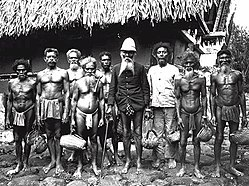

A História de Palau
A história de Palau começou há milhares de anos, quando os primeiros habitantes chegaram às ilhas vindos de outras regiões da Oceania e do Sudeste Asiático. Esses povos desenvolveram comunidades organizadas, vivendo principalmente da pesca, da agricultura e da utilização dos recursos naturais disponíveis nas ilhas.
Durante muitos séculos, os habitantes de Palau mantiveram tradições culturais próprias, construindo uma sociedade baseada na cooperação entre famílias e no respeito à natureza. O oceano possuía grande importância para a vida da população, servindo como fonte de alimento, transporte e comércio entre as ilhas.
Os primeiros europeus chegaram à região no século XVI. A Espanha foi um dos primeiros países europeus a controlar o território de Palau. Durante esse período, os espanhóis exerceram influência religiosa e política sobre parte da população local.
No final do século XIX, após conflitos internacionais, a Espanha vendeu Palau para a Alemanha. Os alemães passaram a controlar economicamente a região, explorando recursos naturais e desenvolvendo atividades comerciais. Mesmo assim, muitas tradições locais continuaram presentes na cultura da população.
Após a Primeira Guerra Mundial, o Japão assumiu o controle de Palau. Durante o domínio japonês, ocorreram mudanças importantes na economia e na infraestrutura do território. Escolas, estradas e novas construções foram desenvolvidas, além do crescimento do comércio e da pesca.
Durante a Segunda Guerra Mundial, Palau tornou-se palco de importantes batalhas no Oceano Pacífico. O território possuía posição estratégica para as forças militares japonesas. Em 1944, ocorreram intensos combates entre Japão e Estados Unidos, causando destruição em diversas áreas do arquipélago.
Após o fim da guerra, Palau passou a ser administrado pelos Estados Unidos como parte do Território Fiduciário das Ilhas do Pacífico, supervisionado pela Organização das Nações Unidas. Nesse período, o país recebeu influência política, econômica e cultural dos norte-americanos.
Ao longo das décadas seguintes, os habitantes de Palau começaram a defender maior autonomia política. Diversos debates e negociações ocorreram até que o país conquistou oficialmente sua independência em 1994. Mesmo independente, Palau mantém forte relação econômica e diplomática com os Estados Unidos.
Atualmente, Palau é reconhecido internacionalmente pela preservação ambiental e pela proteção da vida marinha. O país criou diversas leis ambientais para proteger os oceanos, os recifes de coral e os animais marinhos. Essas medidas ajudaram Palau a se tornar referência mundial em sustentabilidade e turismo ecológico.
A cultura de Palau continua preservando tradições antigas, como danças típicas, músicas tradicionais, festividades culturais e artesanato local. Muitas dessas tradições representam a ligação histórica entre a população e a natureza.
Hoje, o país é conhecido mundialmente não apenas pelas suas belas paisagens naturais, mas também pela sua história marcada por diferentes influências culturais, conflitos internacionais e pela busca pela independência. A combinação entre tradição, preservação ambiental e desenvolvimento turístico faz de Palau um dos países mais interessantes da Oceania.
